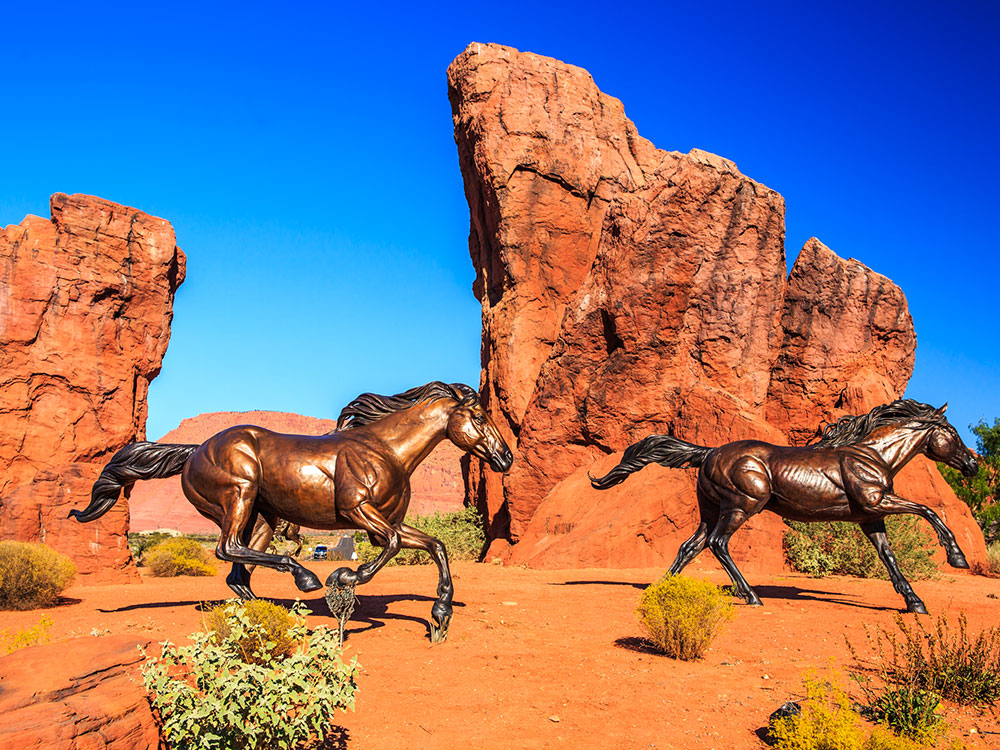
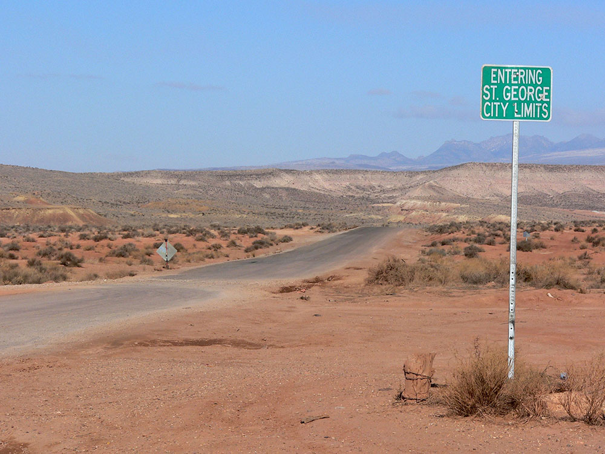
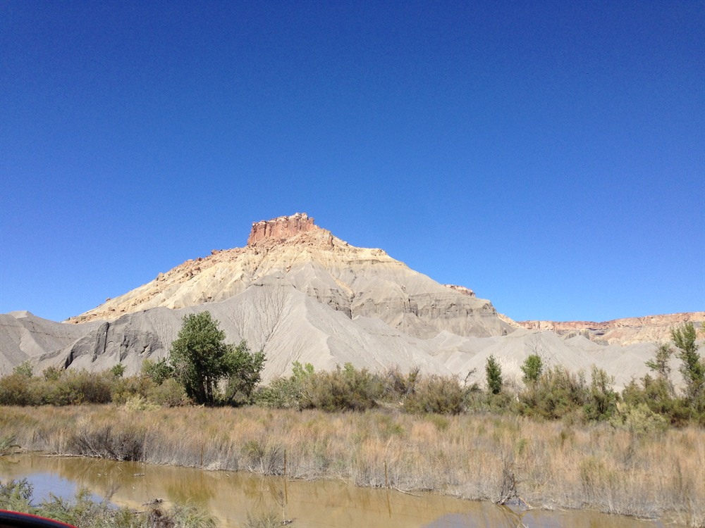
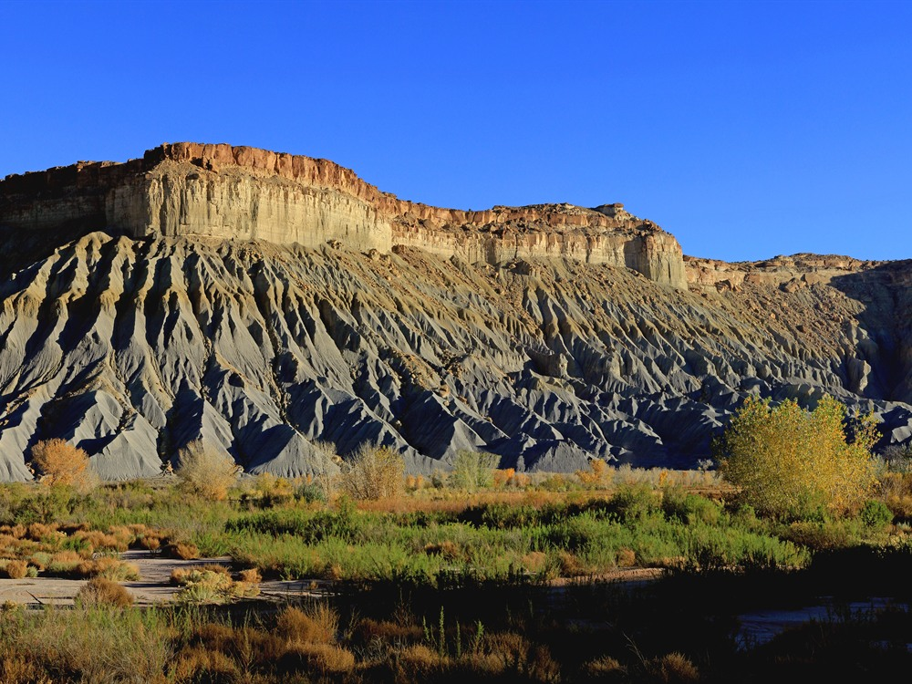
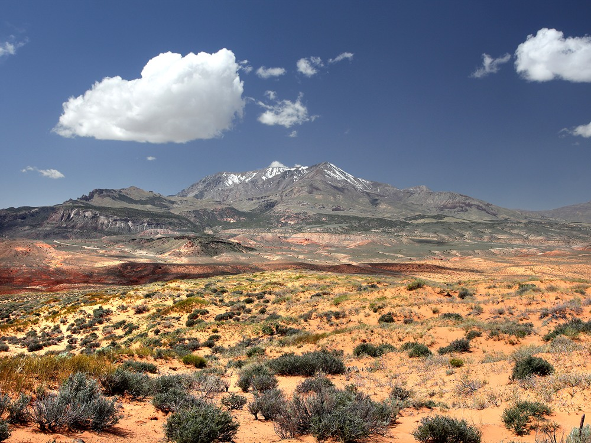
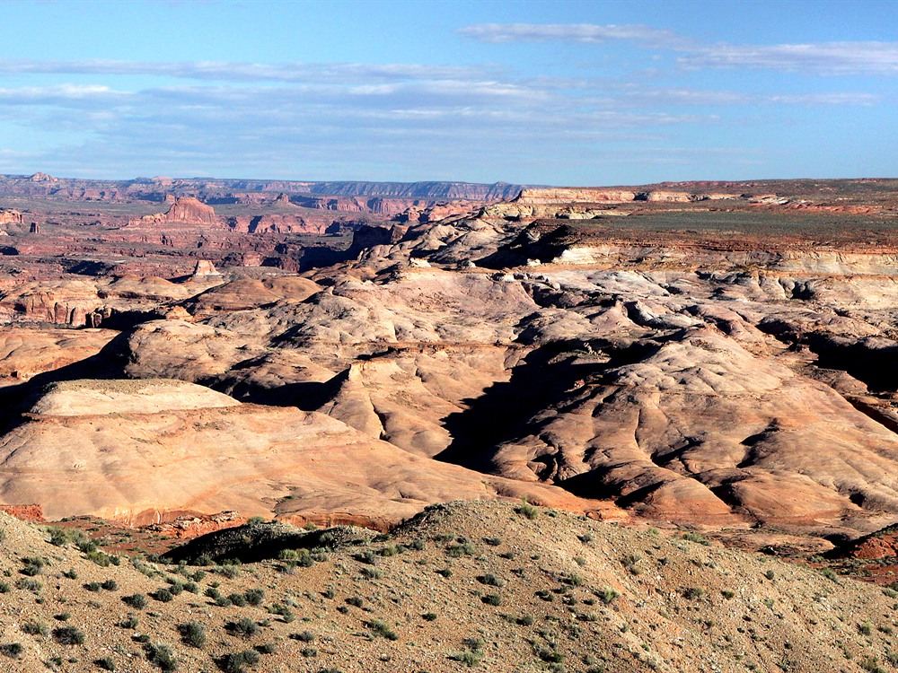
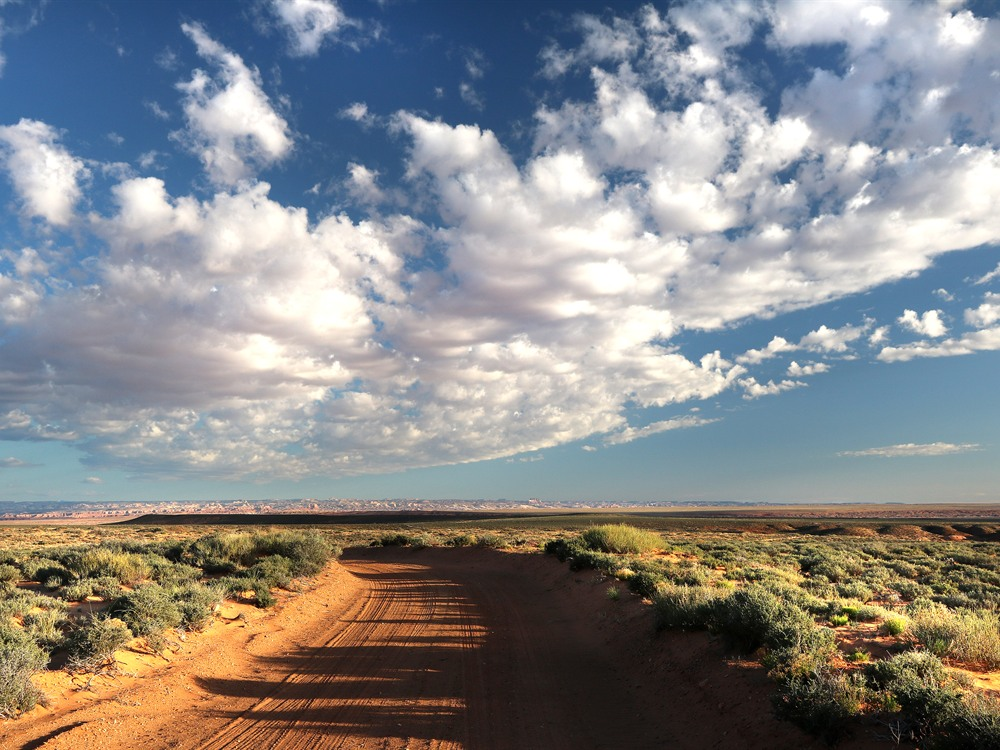
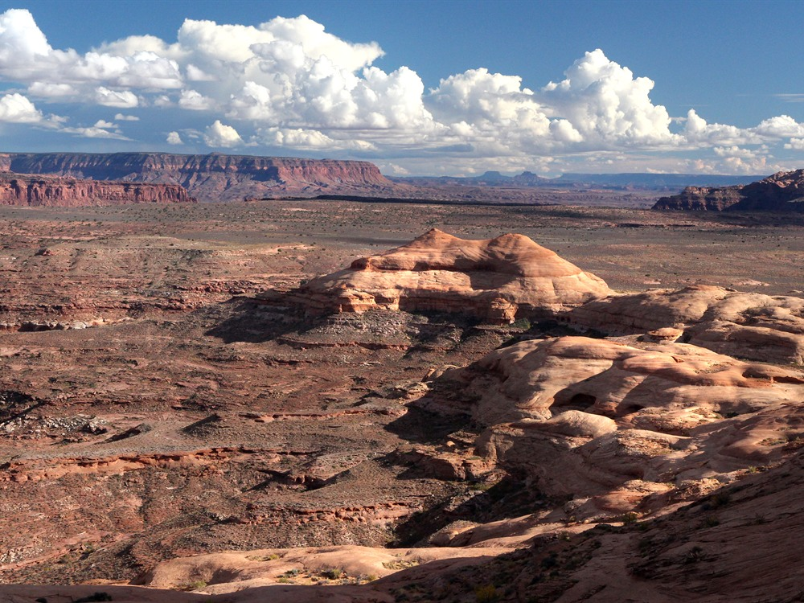
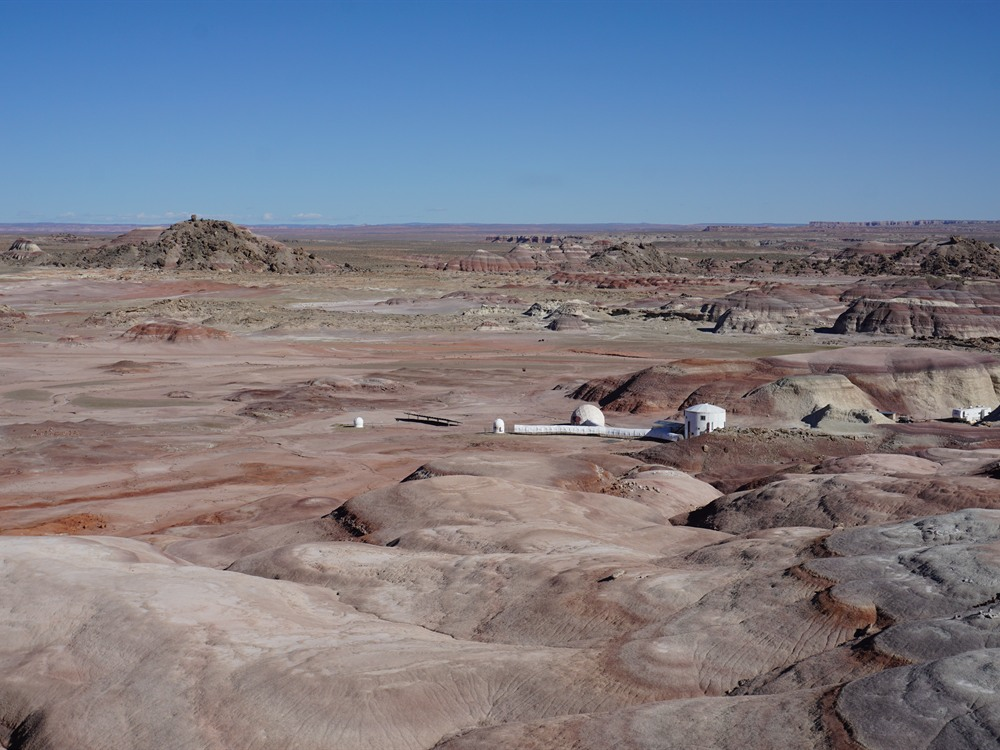

Remote desert destination surrounded by colorful badlands, sandstone formations, deep canyons, scenic overlooks, and nationally recognized public lands that offer exceptional opportunities for outdoor recreation and exploration.
Places to See in The Hanksville Area
Bentonite Hills
Colorful clay hills formed from ancient volcanic ash layers, known for their Mars-like appearance and popular with photographers and geology enthusiasts.
Capitol Reef National Park
Named for its whitish Navajo Sandstone cliffs with dome formations, the park is filled with brilliantly colored sandstone cliffs, gleaming white domes, and contrasting layers of stone and earth
Factory Butte
Massive isolated sandstone butte rising above colorful clay hills and desert badlands that attract photographers, sightseers, and off-road enthusiasts.
Goblin Valley State Park
State park featuring thousands of hoodoos, referred to locally as goblins, which are formations of mushroom-shaped rock pinnacles, some as tall as several yards
Hollow Mountain
A convenience store and gas station carved directly into a sandstone hill, offering snacks, souvenirs, and a glimpse of exposed rock walls inside.
-400.jpg)
Little Wild Horse Canyon
One of the most popular slot canyons in Utah, and are within the Muddy Creek Wilderness.
-400.jpg)
Longdong Silver Spire
Remote desert rock formation featuring twin black spires rising from a clay mound in a stark, cinematic landscape.
Moonscape Overlook
Cliffside viewpoint offering panoramic vistas of a barren, lunar-like valley with layered ridges and sculpted badlands.
Swing Arm City
Expansive off-highway vehicle playground with open terrain, natural jumps, and bentonite clay hills ideal for riders of all skill levels.
Wolverton Mill
Historic wooden mill relocated from the Henry Mountains, combining ore-crushing and sawmilling functions in a restored structure with interpretive signage.
Zion National Park
Park known for Zion Canyon, with deep canyon walls of reddish and tan-colored Navajo Sandstone eroded by the North Fork of the Virgin River, and includes mountains, canyons, buttes, mesas, monoliths, rivers, slot canyons, and natural arches
Overview
The Hanksville area serves as one of the most remarkable gateways to Utah’s canyon country, where vast desert landscapes, rugged mesas, and colorful badlands extend in every direction. Located at the crossroads of several major scenic routes, the region provides access to an extraordinary variety of natural wonders, including Capitol Reef National Park, Goblin Valley State Park, the Henry Mountains, and the remote backcountry of the Colorado Plateau. Travelers are often struck by the area's sense of scale, where towering sandstone formations and open desert vistas create an environment that feels both timeless and untouched.
The terrain surrounding Hanksville is among the most geologically diverse in the American West. Visitors can explore the vividly striped Bentonite Hills, photograph the otherworldly landscapes near Factory Butte, or gaze across the dramatic expanse of the Moonscape Overlook, a viewpoint frequently compared to the surface of another planet. Slot canyons, ancient rock formations, fossil-bearing strata, and sweeping overlooks reveal millions of years of geological history, making the area a favorite destination for hikers, photographers, off-road enthusiasts, and outdoor adventurers seeking landscapes unlike anywhere else in North America.
Beyond its natural attractions, the region carries a rich cultural history shaped by Indigenous peoples, early explorers, ranchers, outlaws, and uranium prospectors. The nearby Fremont River Valley preserves evidence of ancient civilizations, while remote desert hideouts once sheltered members of Butch Cassidy’s Wild Bunch. Today, Hanksville remains a small but welcoming desert community that functions as a base camp for exploring some of Utah’s most spectacular scenery. Whether visitors come to experience world-class stargazing, discover hidden canyons, or embark on multi-day road trips through the red rock wilderness, the area offers an unforgettable glimpse into the wild heart of the Colorado Plateau.
This article uses material from the official Hanksville tourism and municipal website, including information about nearby attractions such as Capitol Reef National Park, Goblin Valley State Park, the Henry Mountains, Factory Butte, and the surrounding Colorado Plateau region. Source: Hanksville, Utah Official Website.

.jpg){kind=link}







.jpg){kind=link}

_(26486133794).jpg){kind=link}

_(26487877983).jpg){kind=link}

.jpg){kind=link}
